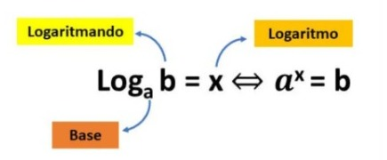

Logaritmos se iniciou a partir da necessidade de transformar operações complexas de
multiplicação e divisão para algo mais simples, que pudesse envolver adição e
subtração. O logaritmo foi criado pelo matemático, físico e astrônomo escocês
John Napier (1550-1617), ele se baseou na propriedade da multiplicação de potência
de mesmas bases.
Exemplo de potência e logaritmo

Mas para podermos calcular com o logaritmo e entender como usar ele, precisamos
estar cientes e compreender algumas coisas sobre o log, que são elas, os logaritmos
têm uma condição de existência, eles precisam ser “b>0, a>0 e a(diferente =)1”, ele
pode se transformar em uma equação exponencial, o logaritmando não pode ser zero nem
número negativo, a base não pode ser negativa, nem 1 e nem zero, em alguns cálculos a
equação exponencial não ajuda muito, então é necessário usar outros métodos.
E também usamos 4 propriedades: